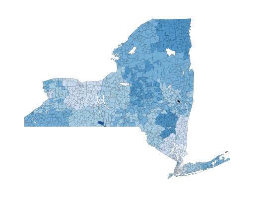

Demo
2012 Discharge Data, Static with .CSV
Zoomable NY State Demo, with JSON
Local Usage
Open terminal on a Mac or command prompt on Windows
python -m SimpleHTTPServer
Open http://localhost:8000 in your browser
Then navigate to diagmap.html
